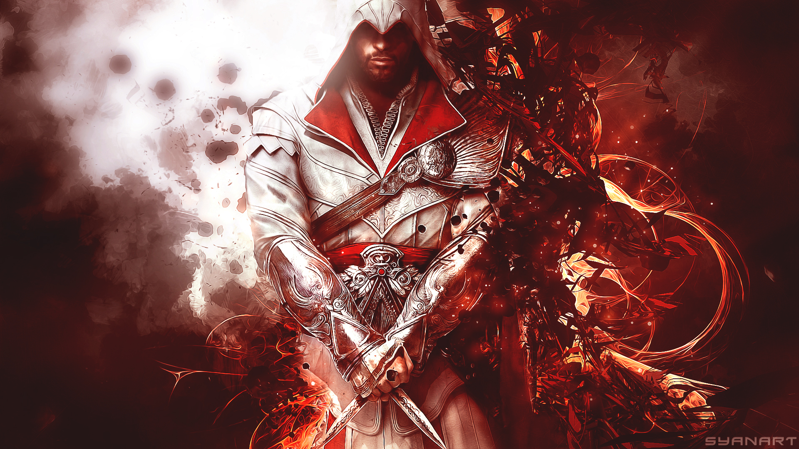
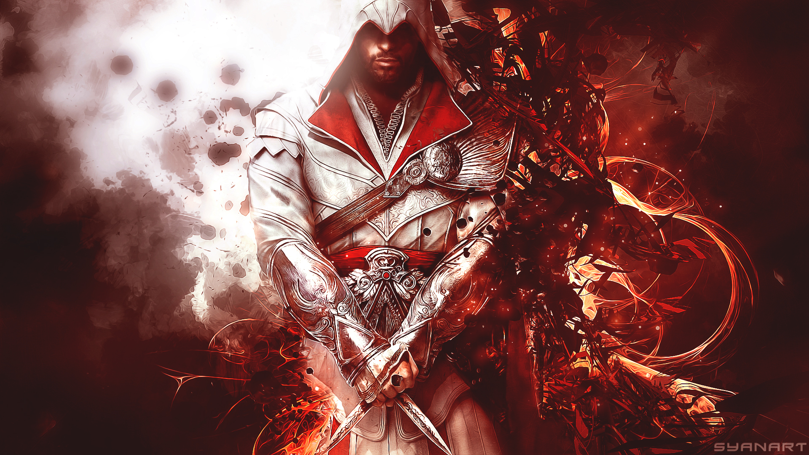
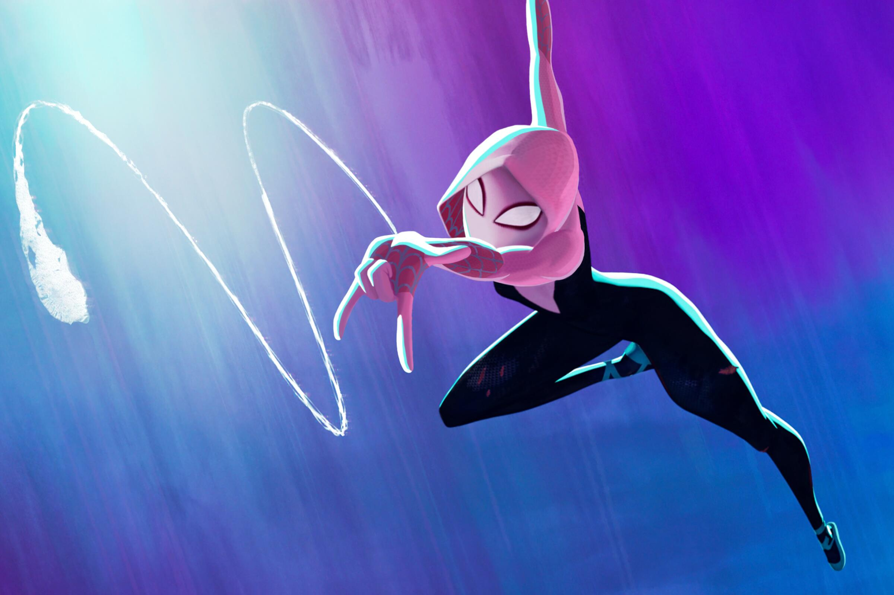
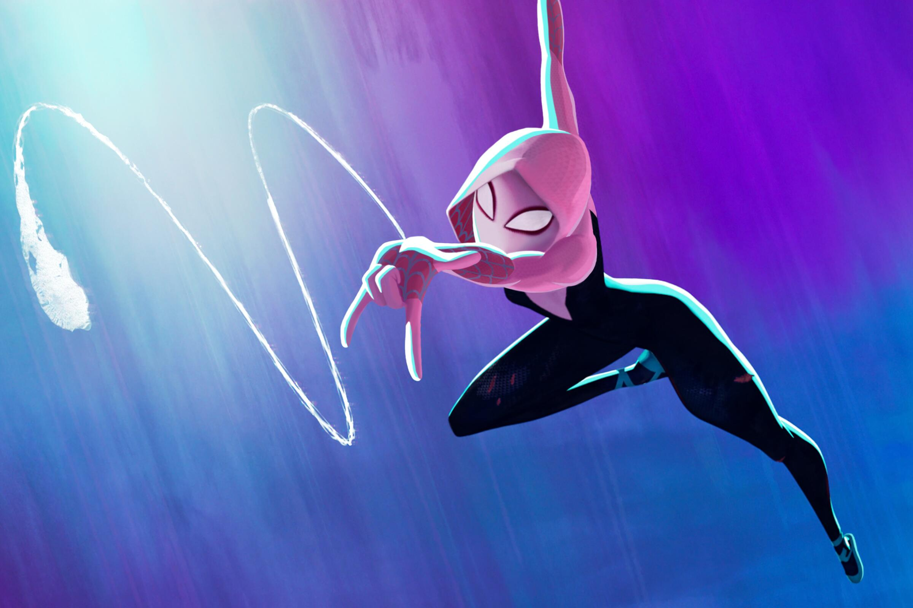
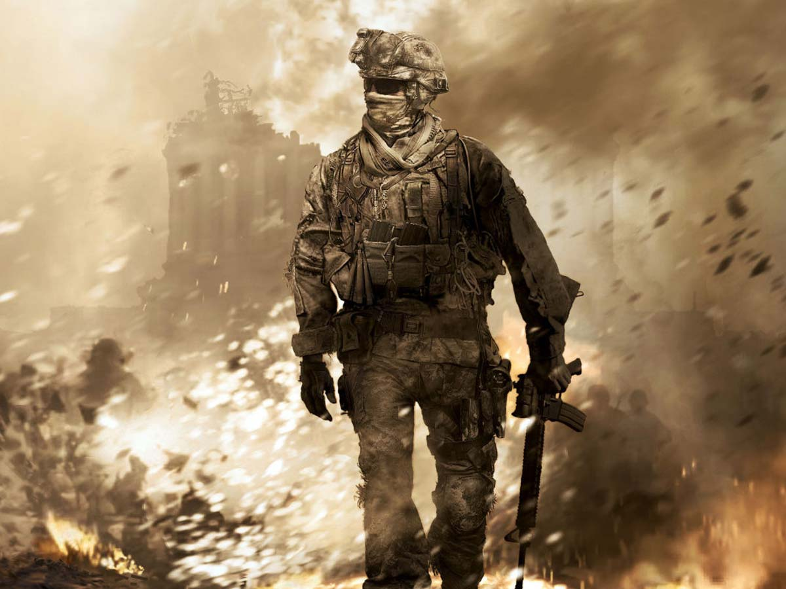
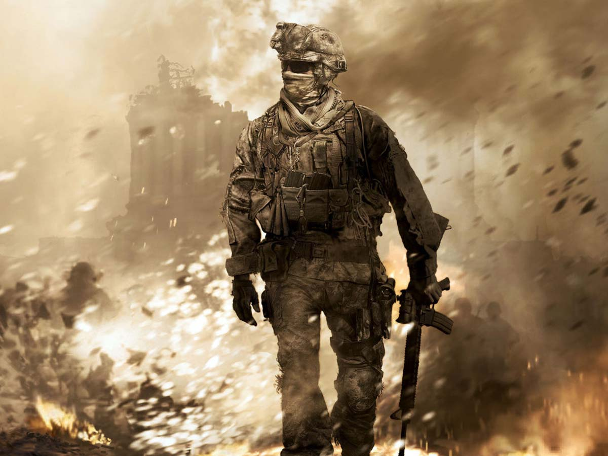

Title:Ezio's Family→ This belongs to one of the greatest gaming franchises, Assassin’s Creed. Up to 20 games have been released, and this tune is used in different tones in different games. Ezio's Family is one of the most iconic background music tracks from the Assassin’s Creed franchise. It was composed by Jesper Kyd and originally featured in Assassin’s Creed II (2009). This music has been reused in different tones across multiple Assassin’s Creed games, making it one of the most recognized themes in gaming history.


Title: Jin Sakai → This is a gaming character and the main protagonist of the game Ghost of Tsushima. The specialty of this music is the flute and how its tune picks up high and low tones beautifully. Jin Sakai's BGM from Ghost of Tsushima is a powerful and emotional soundtrack that captures the essence of the game’s protagonist. It was composed by Ilan Eshkeri and Shigeru Umebayashi and is known for its beautiful use of traditional Japanese instruments, including the shakuhachi flute and taiko drums.

Title: Spider-Gwen Stacy → This is from one of the best Spider-Man movies: Spider-Man: Across the Spider-Verse. It plays in the scene of Gwen's first swing in the movie, having awesome beats and music.The Gwen Stacy Theme from Spider-Man: Across the Spider-Verse is a beautiful and emotional piece of music composed by Daniel Pemberton. It plays during Gwen’s first swing scene and captures her feelings of freedom, struggle, and heroism with a mix of drums, electric guitar, and orchestral elements.


Title:Opening Titles -> The "Opening Titles BGM" from Call of Duty: Modern Warfare 2 (MW2) is a gripping and intense soundtrack composed by Lorne Balfe. This BGM is known for setting the tone of the game with a combination of orchestral and electronic elements, which complement the high-paced and dramatic nature of the game. The theme creates an epic atmosphere with its deep beats, strings, and brass, keeping players immersed in the storyline as they begin the game.


Title:Oogway Ascends-> A beautiful touch from the greatest musican Hanz zimmer from the animated movie franchise name Kung fu Panda . "Oogway Ascends" is one of the most iconic and emotional tracks from Kung Fu Panda (2008), composed by the legendary Hans Zimmer. This music plays during Master Oogway’s farewell scene, creating a deep and spiritual atmosphere with its soft flute, violin, and orchestral arrangement.

Title:Arcane->"Ma meilleure ennemie" (English: 'My Best Enemy') is a song by Belgian singer-songwriter Stromae and French musician Pomme. It was released on 23 November 2024 as part of the soundtrack to the second season of the Netflix animated series Arcane (2024), and later impacted Italian radio on 6 December, through Riot Games and Virgin Music. The song was written by the artists alongside Alexander Seaver, as well as Stromae's brother and long-time collaborator Luc Van Haver.